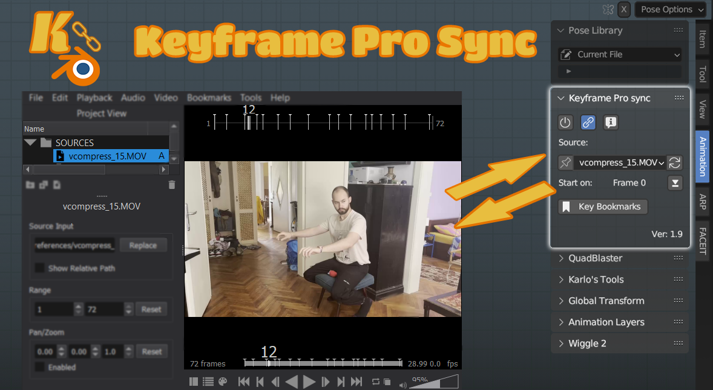
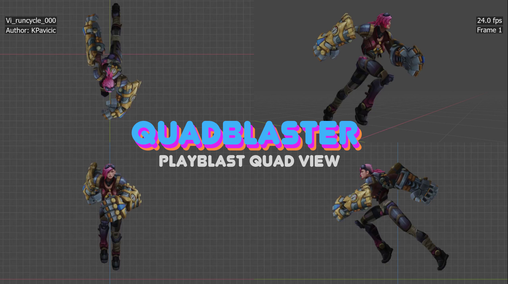
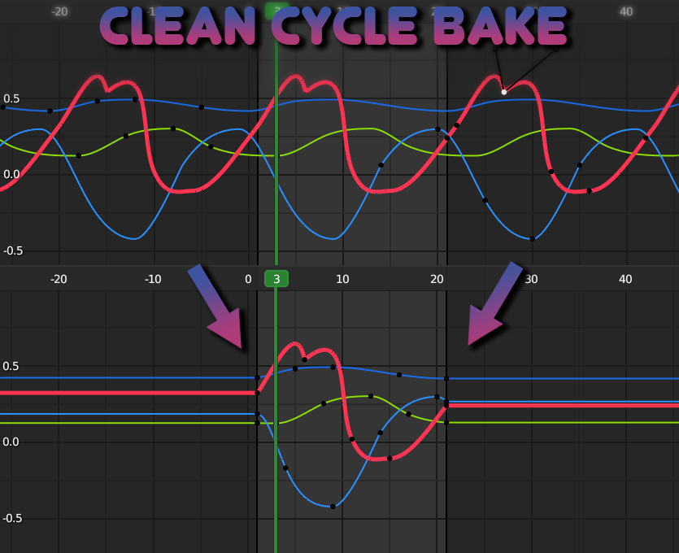

Keyframe Pro Sync is a professional studio tool for animators working with reference footage. It creates a seamless work environment which doesn't require the user to switch between software execute actions such as adjusting the current frame, importing bookmarks, starting playback, or scrubbing.

Quadblaster is a tool I've written to make playblasting with multiple views, notes, and compressing the file a breeze. It contains essential production burnt in metadata such as the animatos name, shot phase, date, notes, frame count, DCC frame count, and more

Clean Cycle Bake is a tool which bakes down f-curves with modifiers or offset animation into a specified range all while preserving f-curve point handles. Essential for baking game animation loops.
